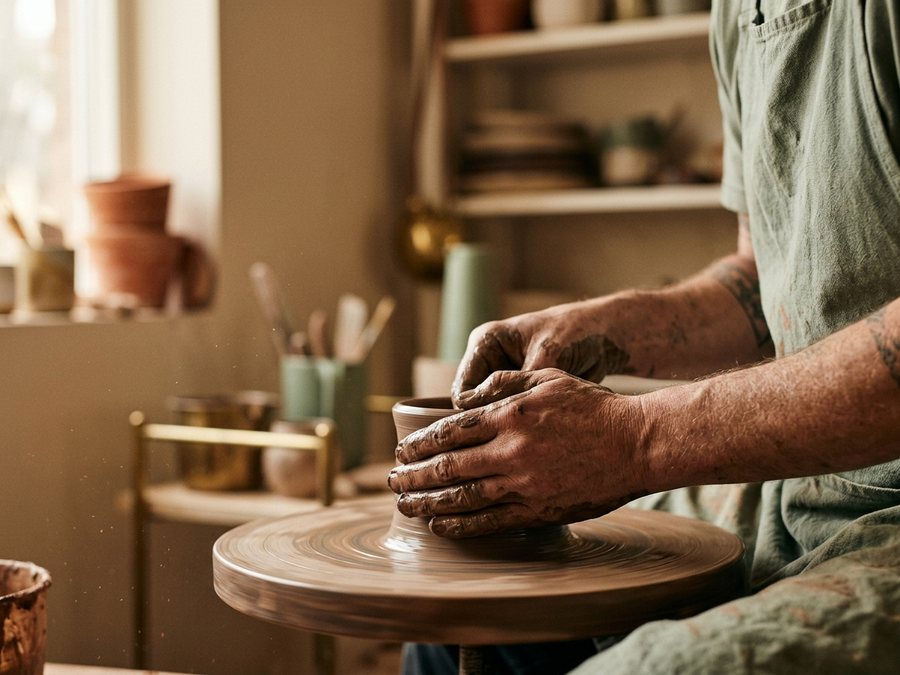
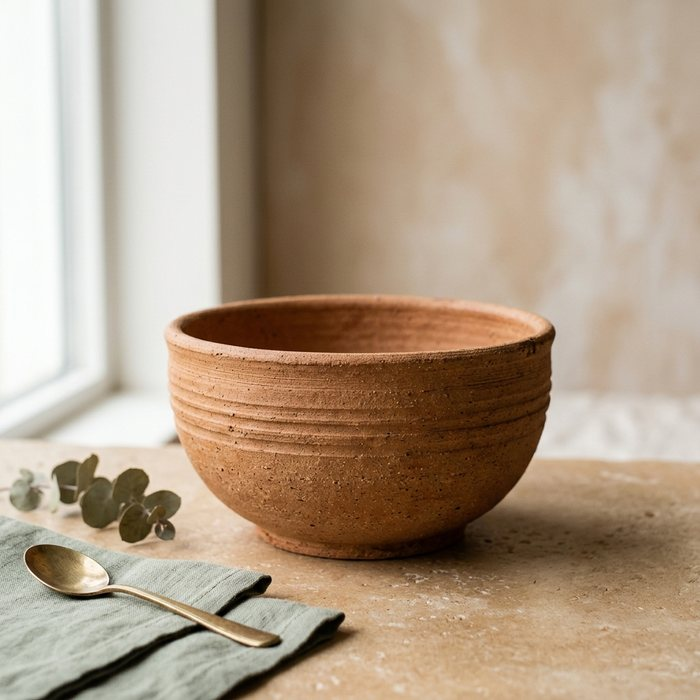
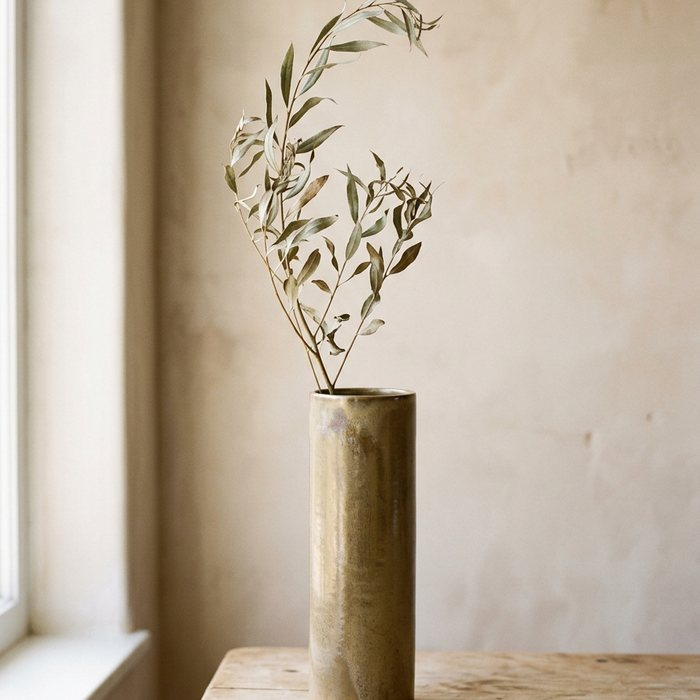
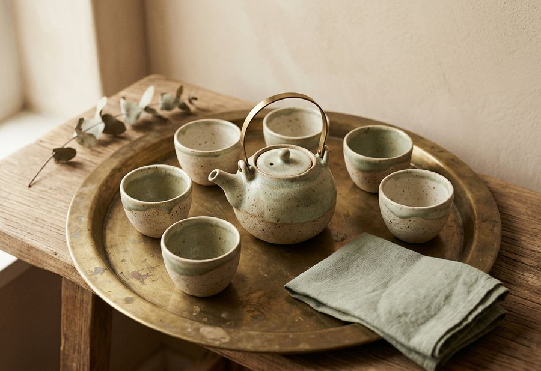

The studio
Kooze started in 2018 with one wheel and a small kiln in Darakeh, north of Tehran. It is still the same room and the same wheel — the hands just got better at it.

The material
The clay comes from quarries around Tehran. It rests for several weeks before it is thrown so the body settles evenly — that patience is what gives the finished piece its strength.


On the wheel
Each piece is thrown in a single sitting, somewhere between ten and forty minutes. The hands feel the pressure and decide the curve, which is why no two ever come out the same.
The firing
The final firing runs about two days in the studio's wood kiln. The path of the flame and the ash it carries mark each piece in a way nobody can plan in advance — that accident is the point.

From the founder
“We are not trying to make a perfect pot. We are trying to make one that still shows the hand that made it.”Maryam Akbari, founder